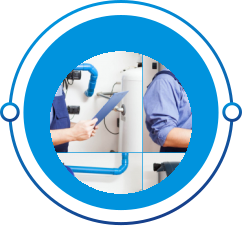
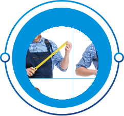
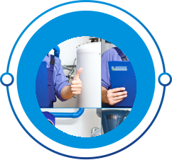
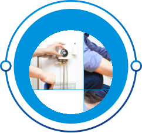
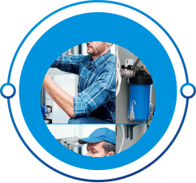

8 шагов к гарантированно чистой воде
Невская Экологическая Компания осуществляет комплексный подход к очистке воды, начиная с проведения анализа воды и заканчивая подбором и монтажом выбранного оборудования, также производит дальнейшее сервисное обслуживание. Вам нужно только оставить заявку и наслаждаться очищенной водой, обо всех промежуточных этапах позаботимся мы.
-
1 ЭТАП

Оформление заявки
Заполните форму заявки на сайте, или позвоните по номеру или напишите в WhatsApp : +7 (812) 421-90-03
-
2 ЭТАП
Анализ воды
Чтобы понять, нужно ли вам устанавливать фильтр, необходимо провести химический анализ. Многолетний опыт специалистов компании ГК НЭК показывает, что сдавать пробу воды лучше в проверенную лабораторию.
-
3 ЭТАП
Диагностика
Специалист разберётся в том, как должна работать система, в каком она состоянии и что надо будет делать далее для поддержания её работоспособности.
-
4 ЭТАП
Предпроектные работы
Результатом является отчёт с технико-экономическим обоснованием: объем проектных работ, состав оборудования, монтажных, пусконаладочных работ и стоимости
-
8 ЭТАП
Сервисное обслуживание
Мы, основываясь на опыте, всегда сможем предоставить план процедур по обслуживанию, который поможет продлить срок службы и даст возможность предотвратить поломки.
-
7 ЭТАП
Пусконаладочные работы
В НЭК отделу пусконаладочных работ уделяется особое внимание. Пусконаладочные работы являются завершающей, и одной из самых ответственных стадий, при установке системы очистки
-
6 ЭТАП
Монтаж
Качественно выполненные монтажные работы — весомая часть реализации проекта. Наша команда инженеров-монтажников имеет СРО, подтверждение квалификации, благодарственные письма заказчиков и пр.
-
5 ЭТАП
Проектирование
Проектирование систем водоподготовки начинается после предпроектных работ. Получив комплект данных, специалисты НЭК разрабатывают технологию очистки воды и конструкторское решение.